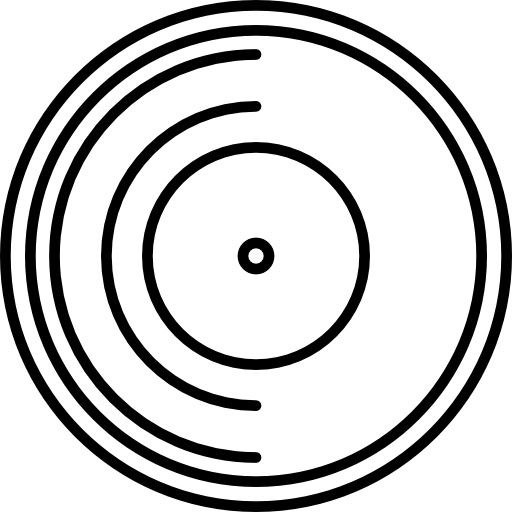
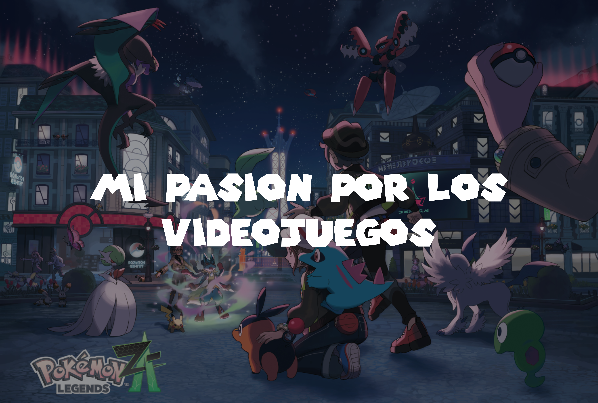
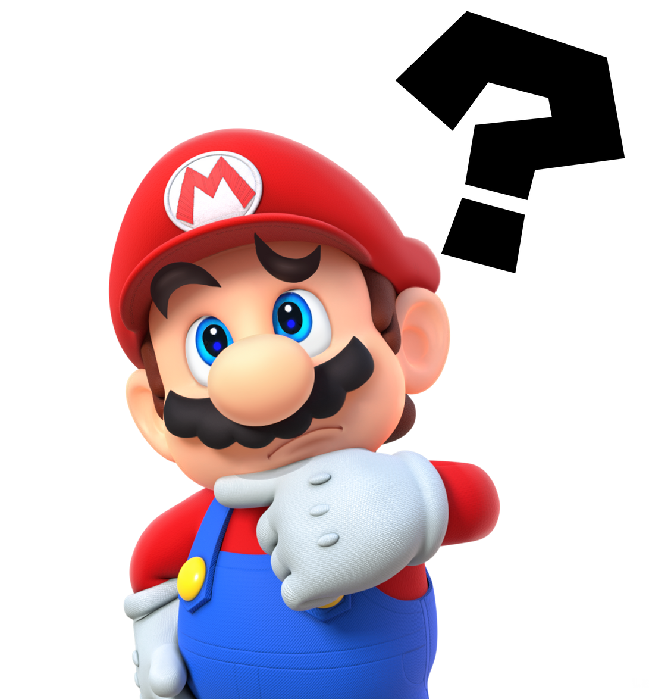
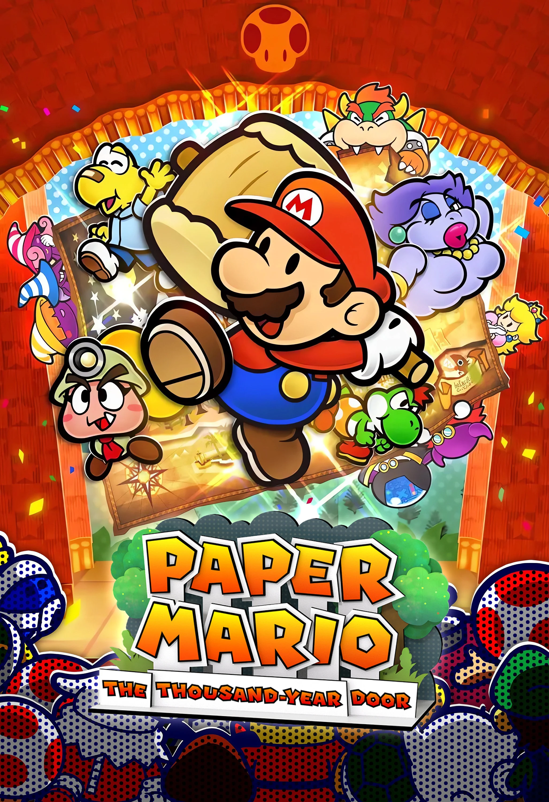
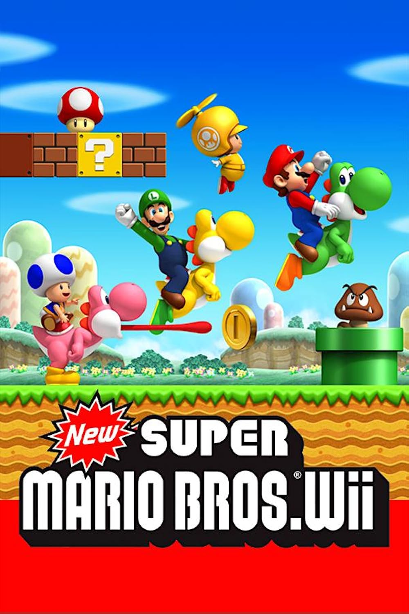
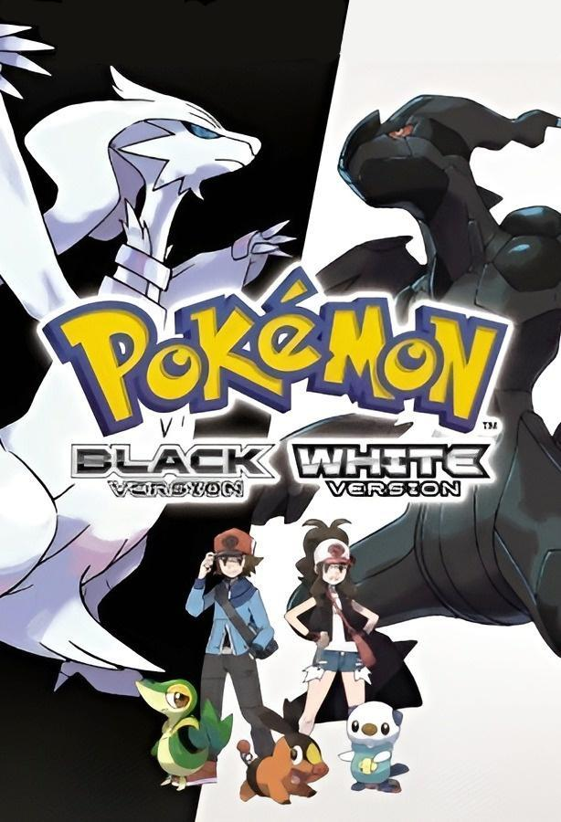
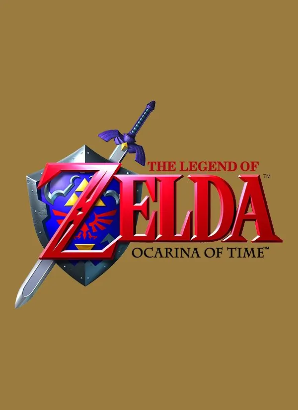
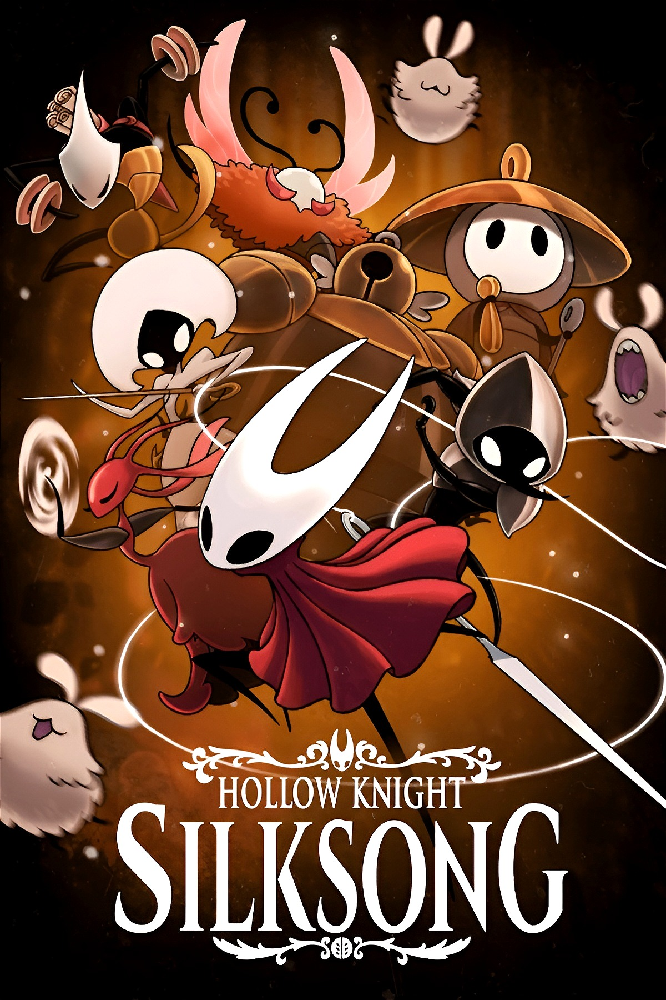

Desde que era pequeño me encantaron los videojuegos. Uno de los primeros que pude probar fue Donkey Kong Country, de la Super Nintendo. Desde que lo probé me fui preguntando qué otros videojuegos había, cómo eran sus mecánicas y cuáles serían los mundos en los que me adentraría.
Como mi padre sabía que me encantaban los videojuegos, compró una Wii de segunda mano, mi primera consola. Con ella venía un videojuego que me haría amar aún más este mundo: Super Mario Galaxy. ¡Es que, Dios! La banda sonora, la jugabilidad, los mundos y los personajes… simplemente me encantan. Fue el primer juego al que le dediqué un montón de horas.
Después de ello seguí probando otros juegos, como Zelda: Ocarina of Time, Sonic the Hedgehog, Mega Man X, entre otros. Cada uno me dio experiencias y momentos diferentes, pero el que realmente me hizo adentrarme en un mundo especial fue Pokémon Rojo Fuego.
Este juego fue un caso muy particular, ya que cuando era pequeño mi madre siempre me prohibió ver Pokémon, pues según ella era del diablo, algo que ahora sé que no era cierto. El caso es que cuando tuve mi computadora y pude jugarlo, me encantó: el hecho de formar un equipo, entrenar, superar los gimnasios, la Liga Pokémon y descubrir a los Pokémon legendarios. Podría seguir mencionando muchas cosas. Fue una de las experiencias que más recuerdo, ya que se me había prohibido todo sobre Pokémon, y el hecho de probarlo después de haberlo visto durante tanto tiempo fue increíble.
Por todo esto, me gustan los videojuegos, porque me permiten explorar mundos, vivir experiencias únicas y forman una parte importante de mi vida. Podría seguir mencionando otros títulos, pero hay demasiados por recorrer. Debido a todo esto es que me encantan los videojuegos, y seguiré jugándolos aun de adulto.

Los videojuegos han sido una parte importante de mi vida. No solo los juego por diversión, sino también como una forma de relajarme, explorar mundos y vivir historias únicas.

Fue uno de mis primeros juegos RPG y, al igual que muchos otros, marcó mi infancia, ya que fue de los primeros títulos de este género que probé.

Fue el primer juego de plataformas de Mario Bros. que probé, y lo recuerdo con mucho cariño por todo el tiempo que jugué junto a mis hermanos. Y por ser el primer juego que complete al 100%

Fue uno de los mejores juegos de Pokémon que probé en la Nintendo DS, ambientado en mi región favorita, no solo por su arte y jugabilidad, sino también por el gran contenido que ofrece.

Fue el primer juego que probé de la saga Zelda y uno de los más largos que he jugado, además de ser el primer videojuego con una historia profunda que experimenté.

Fue el primer metroidvania que he completado y, aunque solo es el segundo que he jugado, se ha convertido en uno de mis favoritos del género, ya que la dificultad con la que te reta es emocionante.